LA CRUZ NARIÑO
La Cruz, oficialmente La Cruz del Mayo, es un municipio colombiano ubicado en el departamento de Nariño.
Es una de las poblaciones más antiguas de la región como fundación española y la más antigua del actual departamento de Nariño.
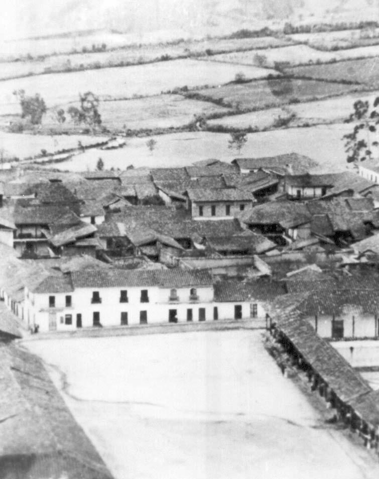
Los principales atractivos turísticos del municipio de La Cruz son:
Termales en la vereda de Tajumbina:
La mayor fuente turística que posee este municipio es el corregimiento de Tajumbina, el cual es visitado por sus aguas termales y su cascada
con una caída de agua de 30 metros, recibiendo visita de personas de toda Colombia.
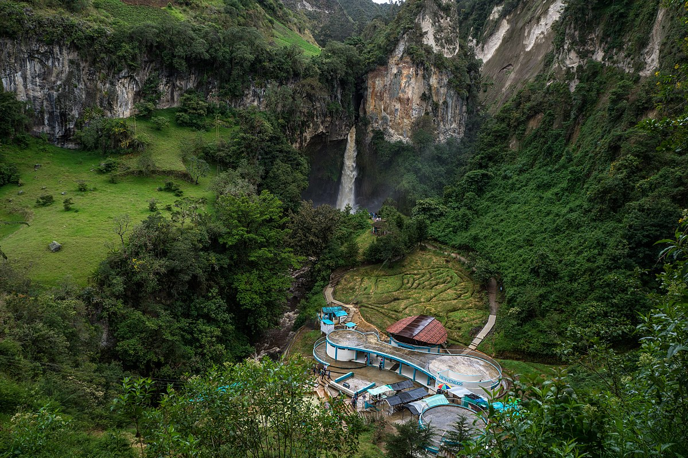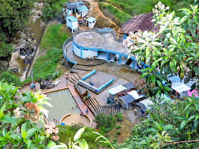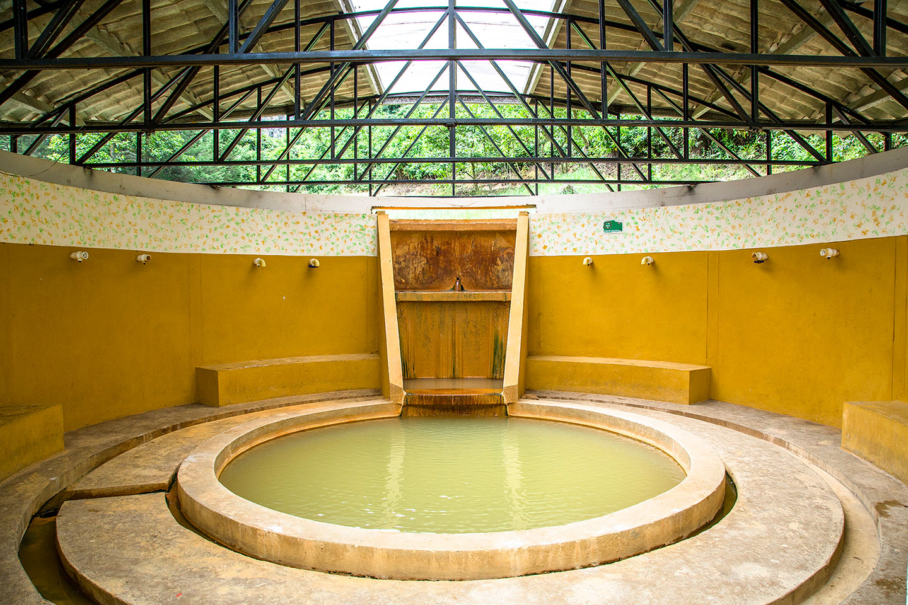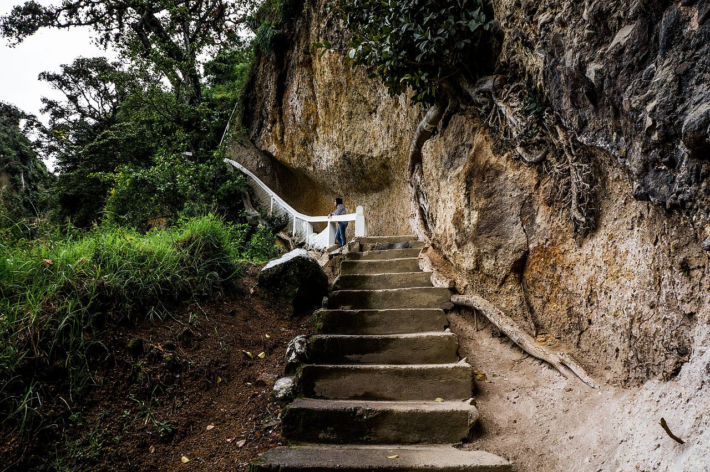
La Estancia:
En esta encontramos la gastronomía (cuy, pesca, caldo de gallina criolla, empanadas, mazamorra, dulce de tabla, postres) del municipio de la Cruz Nariño.
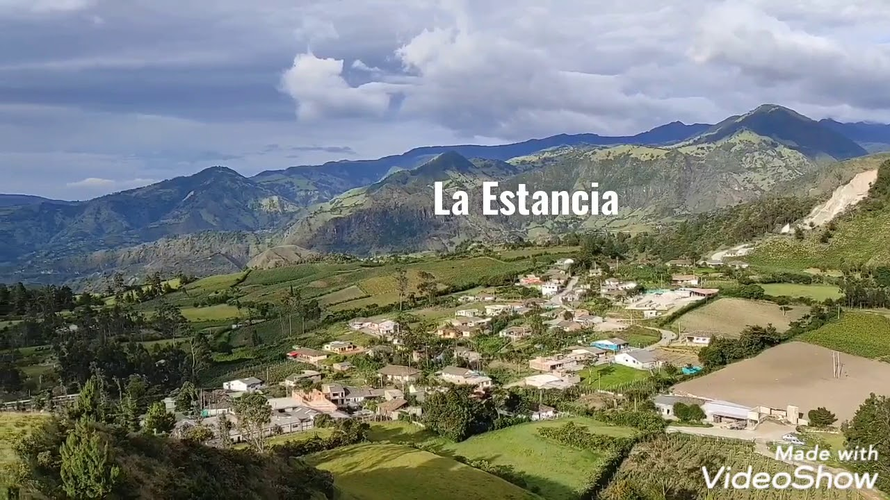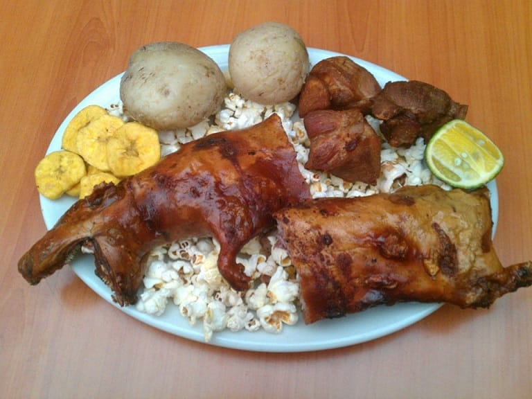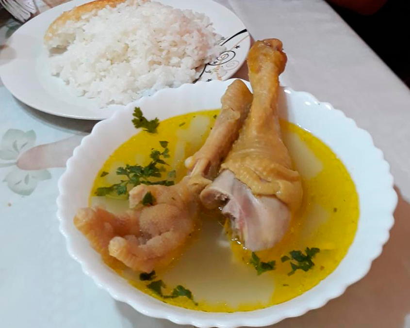
Complejo volcánico Doña Juana Cascabel:
El Parque nacional natural Complejo Volcánico Doña Juana-Cascabel tiene muchos atractivos para el turismo por sus paisajes y, flora y fauna.
Entre las más destacadas el oso de anteojos, la danta, tigrillo, la orquídea. Los dos cerros llamados ánimas y petacas.
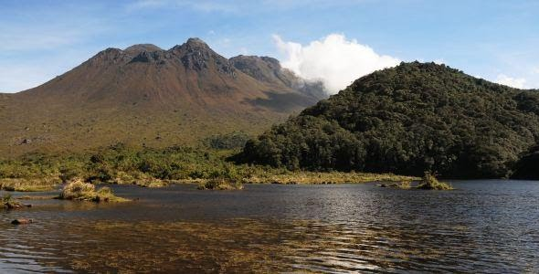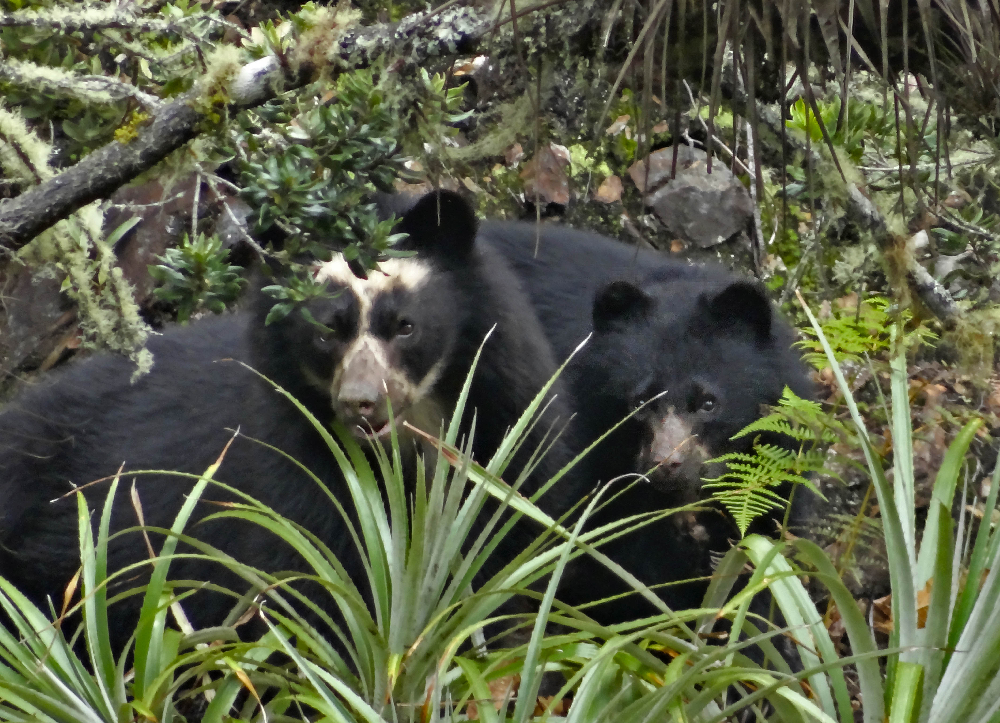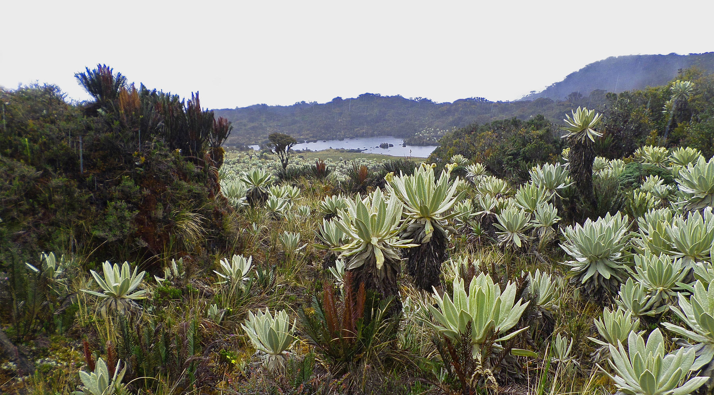
El carnaval Negros y Blancos del municipio de La Cruz:
Se lleva a cabo fuera del calendario tradicional del resto de los carnavales, enmarcado por las fiestas paganas y cristianas en el período
de Cuaresma o de la primera luna llena en primavera; sus orígenes están ligados a las fiestas andinas ancestrales, a las que posteriormente se integraron otras tradiciones.

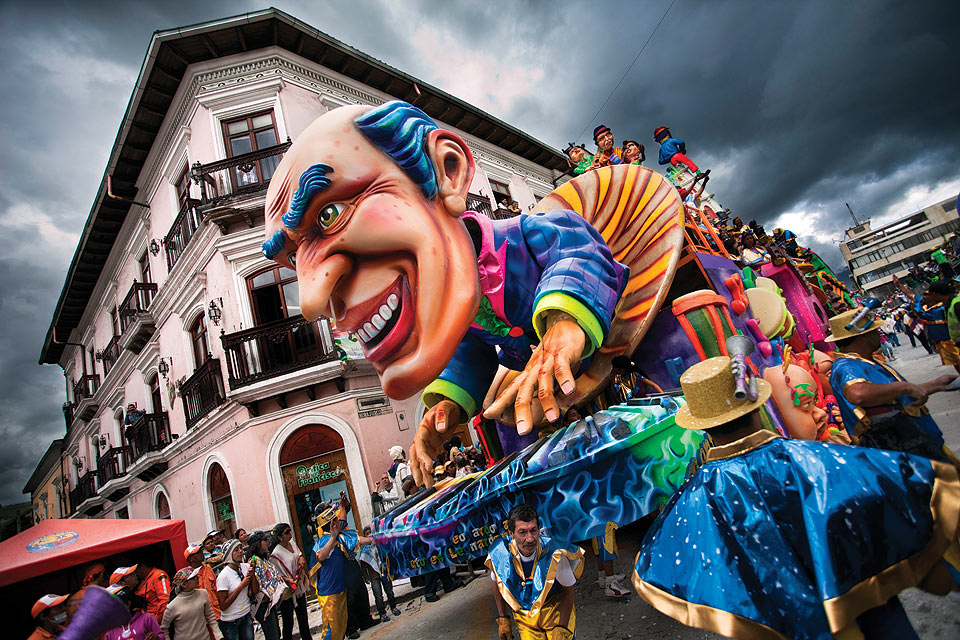